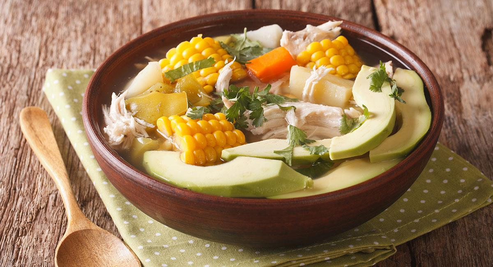
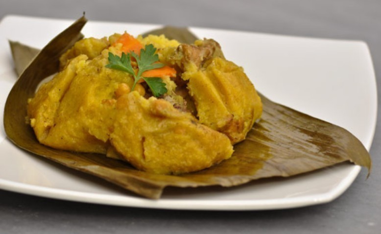
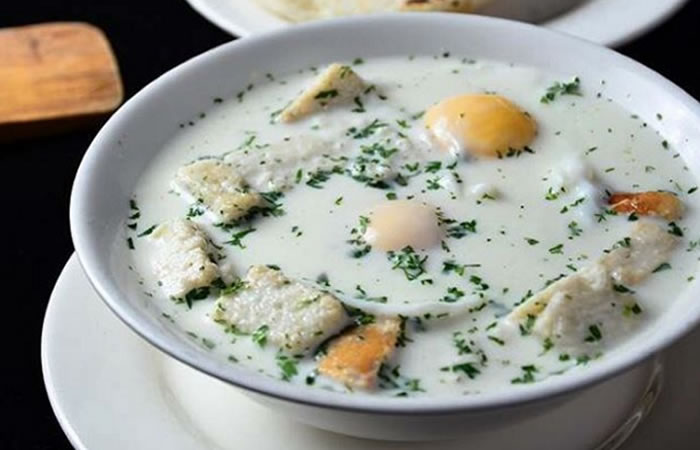

Gastronomía Bogotana
Platos Ancestrales

Ajiaco Santafereño
El ícono indiscutible de la mesa capitalina. Este caldo denso y reconfortante es una obra maestra de equilibrio técnico que fusiona tres variedades de papas nativas —sabanera, pastusa y criolla— con el aroma único de la guasca. Servido tradicionalmente con pollo desmechado, alcaparras y un toque de crema de leche, el Ajiaco representa la herencia mestiza que define el sabor de los hogares bogotanos.

Tamal Bogotano
Mucho más que un desayuno, el tamal es un ritual envuelto en hojas de platano. Su masa de maíz suave protege una generosa mezcla de carnes (pollo, cerdo y tocino), arvejas y zanahoria, cocidos lentamente al vapor para absorber la esencia de la hoja. Es el compañero inseparable del chocolate santafereño y el pan en las mañanas frías de la capital.

La Changua
La Changua es el despertar clásico de los Andes colombianos. Este caldo de leche y agua, infusionado con cilantro fresco y cebolla larga, se sirve con huevos escalfados y calado (pan tostado) que se deshace en la mezcla. Es una preparación sencilla pero poderosa que evoca la nostalgia de las cocinas de las abuelas y proporciona la energía necesaria para recorrer las calles de La Candelaria.
Mercados Tradicionales

Plaza de Paloquemao
Considerada la despensa más vibrante de Colombia, Paloquemao es un festín sensorial donde convergen los sabores de todas las regiones del país. Desde las flores frescas que inundan la entrada al amanecer hasta los pasillos repletos de frutas exóticas como el mangostino y la curuba. Es el lugar donde los chefs locales y visitantes descubren la biodiversidad agrícola del territorio en una experiencia de intercambio cultural auténtica.

Plaza de la Perseverancia
Ubicada en el corazón de un barrio obrero histórico, esta plaza se ha transformado en el epicentro de la cocina popular de alta calidad. Es célebre por su 'Ruta del Bocado' y por albergar a las 'Cocineras de Tradición', guardianas de recetas ancestrales que han sido premiadas a nivel nacional. Aquí, el sabor del campo llega a la ciudad en forma de sopas humeantes y platos típicos que celebran la resistencia cultural.

La Puerta Falsa
Con más de dos siglos de historia desde su fundación en 1816, La Puerta Falsa es un refugio de nostalgia junto a la Catedral Primada. Este icónico local, que ha sobrevivido a los cambios de la capital, es el destino obligado para disfrutar del tradicional chocolate completo: una taza espumosa acompañada de queso, pan de bono y almojábana. Es un rincón donde el tiempo parece detenerse entre aromas de canela y quesos fundidos.